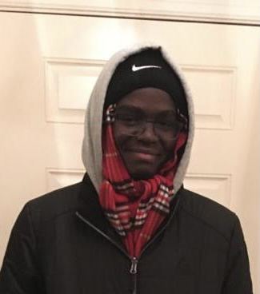

The AI blog
THE BANANA CLUB

What is the banana club?
Hi dear unknown person reading on this website. You are on the official page of the banana club! The point of this page is advertise, present share the beauty of banana smiles. The group has been founded by Jonathan Allarassem The Greatest, the great smiler to whom we devote ourselves with a deep respect. Below is a picture of this amazing person for whom we thanks God everyday.

For years he has been studying and fighting for the purety of simple smiles that obviously have the shape of a banana. He has been working for years on this topic and so it is as an expert in the field that he speaks (the only expert actually) when he speaks about the banana smile. we thus trust on him and do not rely on our own intelligence when it comes to know if someone banana smiled or not. A couple of times they have been some discussion on whether the Great Jonathan was right/wrong in the case of Eva Tan smile. She banana smiled but was not accepted for the givent reasons. Like all of you know, Jonathan was obviously right and the contestant was wrong. He as you may know, do all things for the best of the applicants. That said, elections for the presidence of the group will be held soon. We all know that the president will be reelected (all members give to him there total support). Shortly before that the applications will open November the 8th. The deadline is Novemeber the 9th at midnight. We are really busy so late applications will not be accepted.
Application process
What constitutes cheating?
How do I failed? My smile was perfect!
We don't like your face?